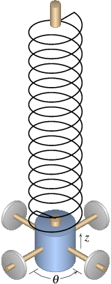

-
Cinemática con un único grado de libertad. Ecuaciones diferenciales de
variables separables.
-
Cinemática vectorial. Vectores libres. Sistemas de ecuaciones
diferenciales.
-
Movimiento curvilíneo. Coordenadas tangente e normal.
-
Mecánica vectorial. Leyes de Newton.
-
Dinámica de los cuerpos rígidos. Vectores deslizantes. Momento de una
fuerza.
-
Trabajo y energía. Fuerzas conservativas.
-
Sistemas dinámicos. Espacio de fase. Sistemas conservativos.
-
Mecánica de Lagrange. Ecuaciones y multiplicadores de Lagrange.
-
Sistemas dinámicos lineales. El oscilador armónico. Valores y vectores
propios.
-
Sistemas dinámicos no lineales. Péndulos. Matriz jacobiana.
-
Ciclos limite y sistemas de dos especies. Sistemas depredador presa.
-
Sistemas caóticos. Atractores extraños.